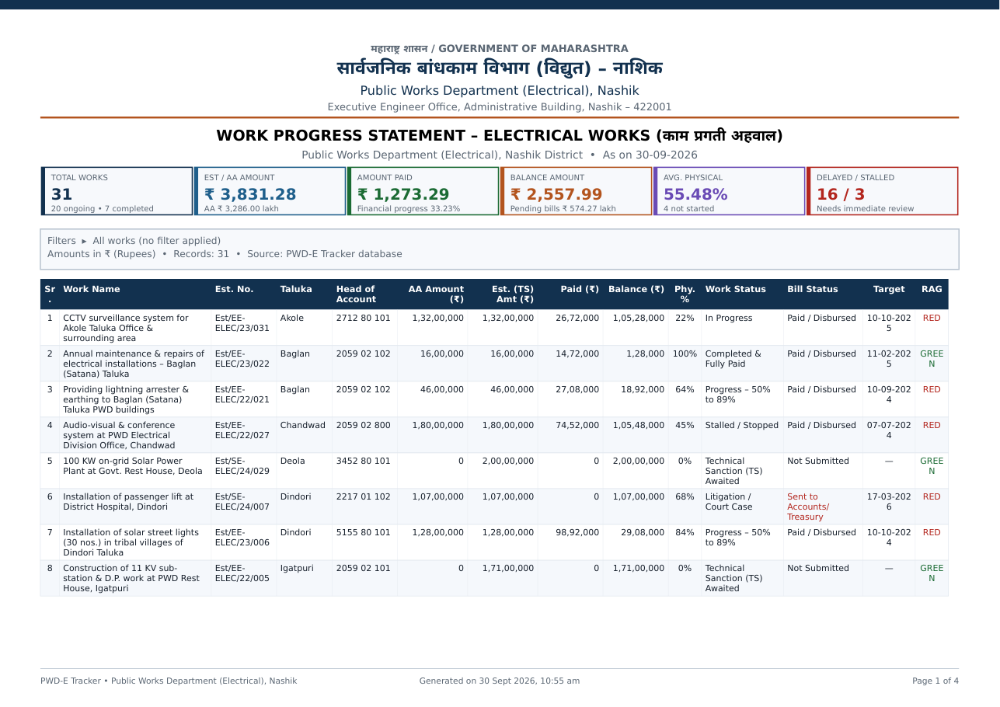
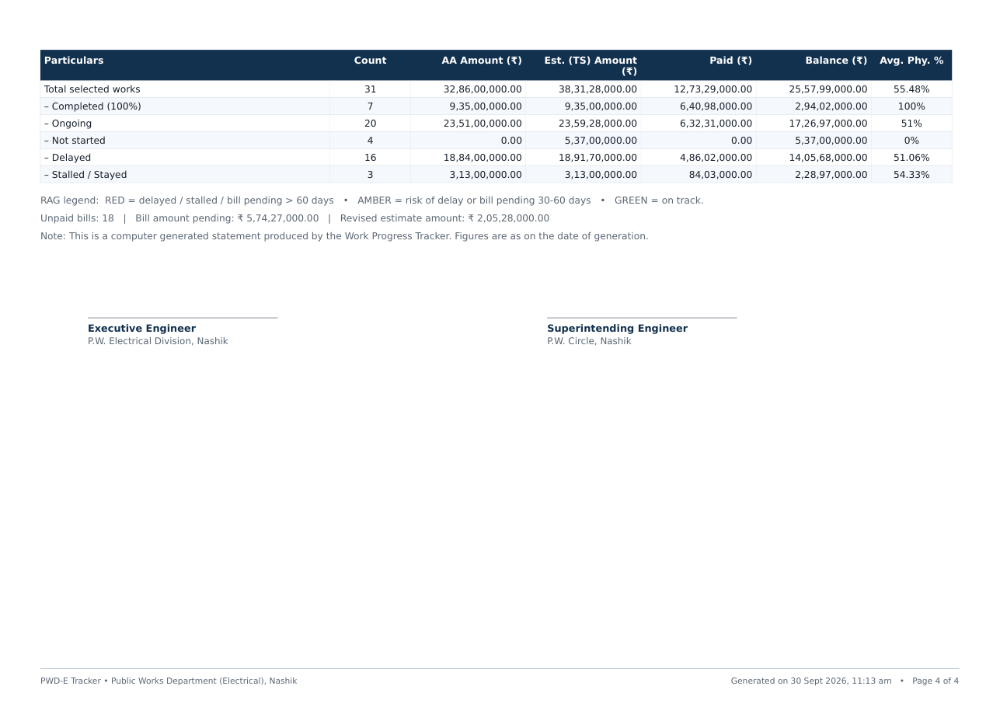
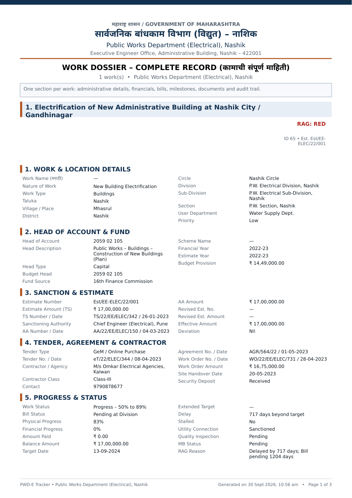
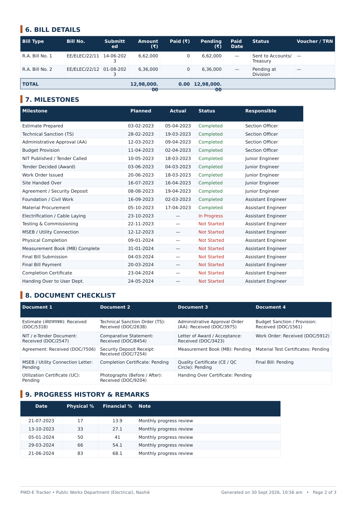
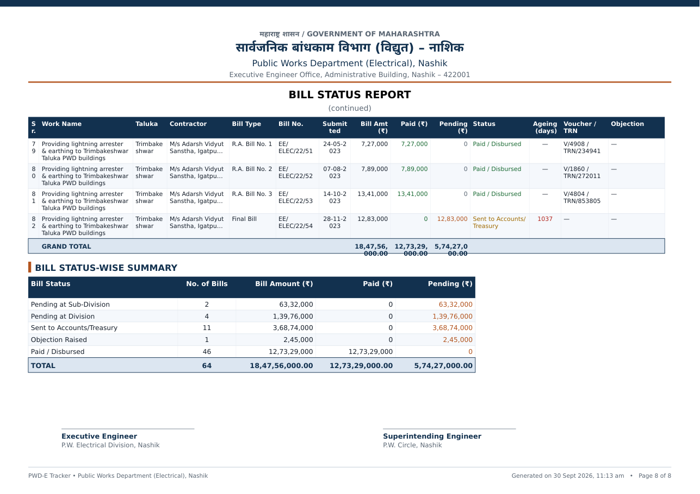

🗂 Taluka-wise ledger
All 15 Nashik-district talukas, grouped & filterable; Head of Account, AA/Est amounts, bill & work status per work.
🤖 Auto-computation engine
Balance, utilisation, delay days, auto bill status, stalled & overdue flags and RAG rating recalculated on every save.
📈 Tracking tools
Dashboard KPIs & charts, alerts centre, bill register with ageing, global milestone tracker, document checklists.
Reports
10 PDFs with govt letterhead & signature blocks, 9 Excel workbooks with live formulas, CSV export — all honour filters.
📥 Import your register
Upload Excel/CSV or paste text; Marathi headers (कामाचे नाव, तालुका, लेखाशिर्षक…) auto-mapped with preview & validation.
🔒 Safe by design
Recycle bin, audit log, JSON backup/restore; your data stays in one SQLite file on your own machine or server.
Sample report output (generated by this code)





Run it in 4 commands (offline, single user)
git clone https://github.com/Mukesh931/pwd-tracker.git cd pwd-tracker npm install # once, needs internet (Node.js 20+) npm start # then open http://localhost:3000
Works fully offline afterwards. Sample Nashik data loads with one click (Settings ▸ Data); reset to empty and enter your own works via the UI or Import.
What's inside
| Module | Highlights |
|---|---|
| server.js Express 5 API | ~60 endpoints: works/children CRUD, quick & bulk update, recompute, recycle bin, import preview/commit, backup/restore, audit log, report streaming. |
| lib/db.js SQLite layer | Schema + invariants (no NULL numerics), recompute engine: RAG, delays, bill ageing, auto statuses, milestone/document flags. |
| lib/pdf.js PDFKit | Devanagari font embedding, mixed-script text runs, auto-scaled tables, letterhead, KPI strips, signature blocks, page x of y. |
| lib/xlsx.js ExcelJS | Master ledger with live formulas, dropdowns, conditional formatting; 9 workbook builders with COUNTIF/SUMIF summary sheets. |
| public/ SPA | Dashboard, ledger, work dossier tabs, bills, milestones, alerts, reports hub, import wizard, settings, logs — zero-dependency vanilla JS. |
| deploy/ Ops kit | VPS one-shot script (nginx + pm2 + Let's Encrypt), Caddyfile, Cloudflare Tunnel playbook, domain & Docker guides. |
Documentation
- README — features, API surface, code map.
- USER-GUIDE.md — day-to-day working guide (entry, updates, monitoring, reports, backups).
- DEPLOYMENT.md — offline install, VPS / PaaS / Docker publishing.
- deploy/CLOUDFLARE-TUNNEL.md — ₹0/month public HTTPS URL from your office PC.